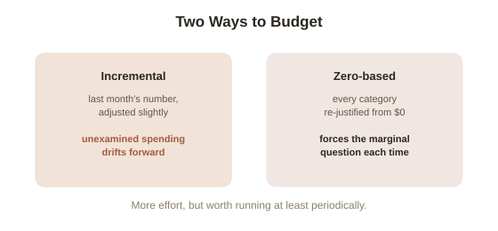

Chapter 9: Budgeting, Done as Marginal Thinking
Chapter 8 argued that time needs to be priced honestly, not treated as free. This chapter applies that directly to the most common personal-economics tool that usually gets it wrong from the start: the budget.
Why "average spending" categories mislead
Most budgeting advice works by tracking spending into broad categories — groceries, entertainment, subscriptions — and comparing each to an average or a target. This runs into exactly the average-versus-marginal problem from Chapter 2: a category's average monthly total tells you almost nothing about whether the next dollar spent in it is worth spending. A "groceries" category that's slightly over its average target might contain one dollar that produced real value and another that was pure waste, and the average obscures the difference entirely. The marginal question — is this next specific purchase worth more than its next-best use — is the one that actually governs whether spending is well-directed, exactly as it did for the workshop's next order back in Chapter 2.
Zero-based budgeting: starting from zero, not from last month
Zero-based budgeting requires every dollar in a new period to be justified from zero, rather than starting from the previous period's category totals and adjusting slightly. The advantage over traditional incremental budgeting (last month's number, plus or minus a bit) is that it forces the marginal question to actually get asked, category by category, rather than letting spending drift forward on autopilot simply because it was there last time — a subscription nobody uses, a category that ballooned once and never got reviewed, an expense that made sense under old circumstances but hasn't been revisited since. Zero-based budgeting is more effortful than incremental budgeting, which is the honest tradeoff — worth doing at some periodic interval (quarterly, say) rather than never, even if not sustainable to run from absolute zero every single month.

The envelope method as marginal thinking made physical
The envelope method — allocating a fixed cash amount to each spending category in advance, physically or digitally, and stopping once an envelope is empty — works, when it works, precisely because it makes the marginal cost of the next purchase in a category viscerally obvious: there's a real, visible boundary where the next dollar spent has a real, felt cost, rather than an abstract number on a statement reviewed weeks later. This is worth naming explicitly as a psychological tool for enforcing an economic principle (the marginal decision rule) that's easy to state and hard to feel in the moment — the same reason the "stranger test" from Chapter 6 works for sunk costs: both are ways of making an abstract, correct rule concrete enough to actually follow under real conditions.
Try this
Ideas for noticing or testing this in your own life.
- Pick one budget category you haven't seriously reviewed in months, and re-justify it from zero — not adjusted from last month's number, but asked fresh: given everything I know now, what should this actually be?
Worth pulling on?
A few loose threads from this chapter — if any of these genuinely grab you, that's a good sign of where to go next.
- Eight tools are now on the table — opportunity cost, marginal analysis, breakeven, diminishing returns, economies of scale, sunk costs, transaction costs, and time as a full-priced resource. → Picked up directly in Chapter 10 — a closing framework for using all of them on one real decision.